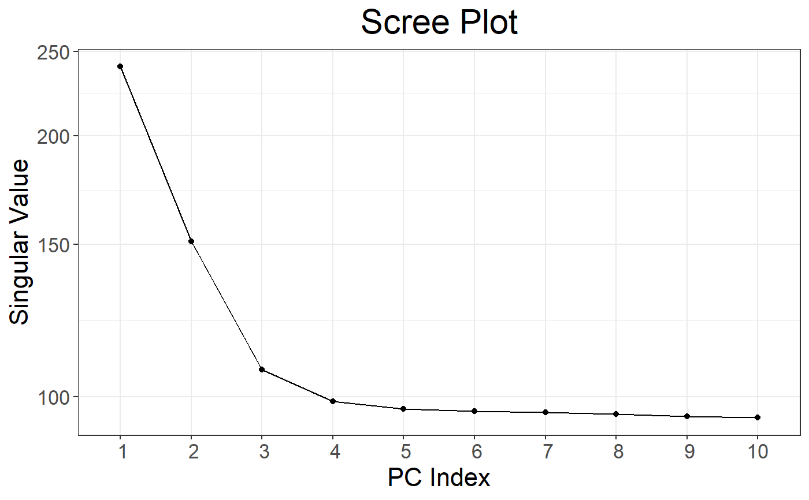
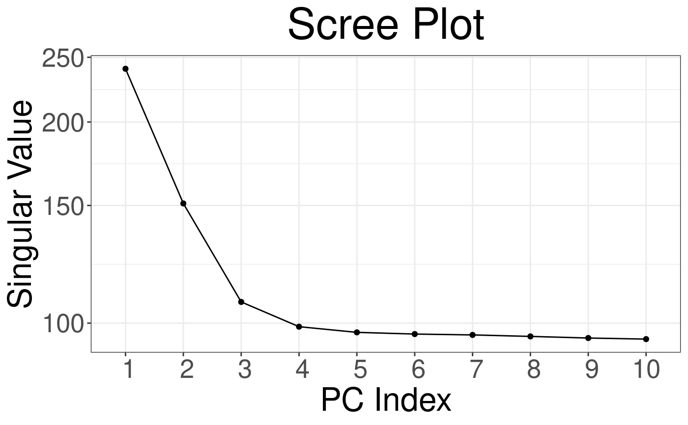
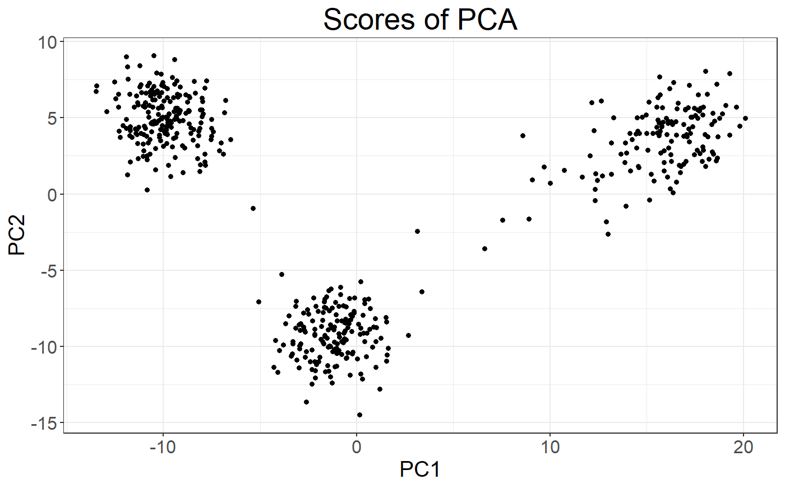
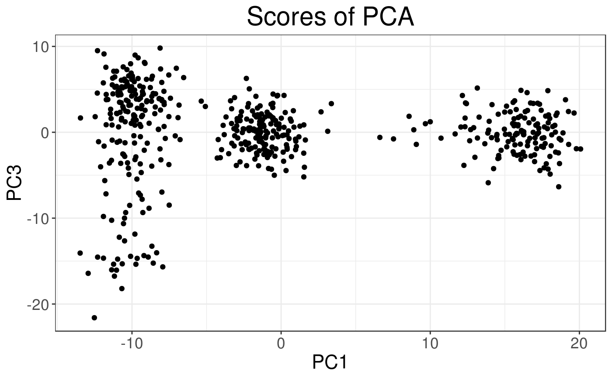
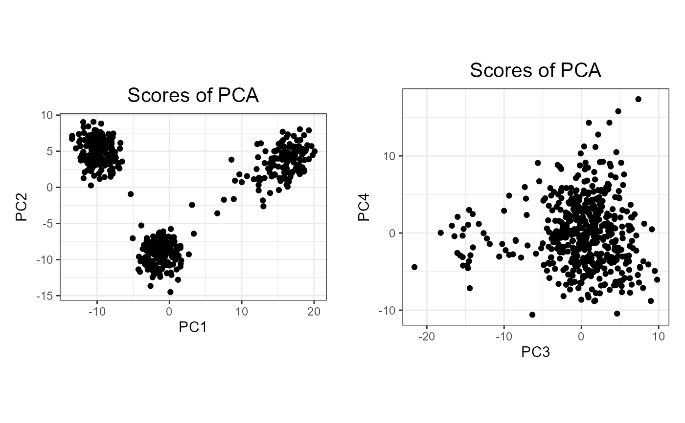
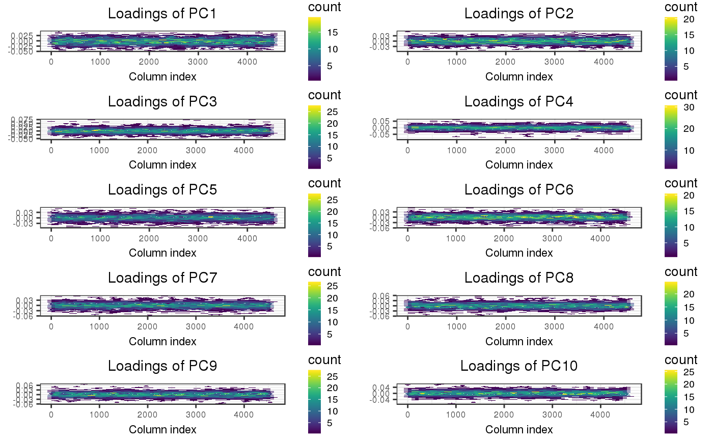
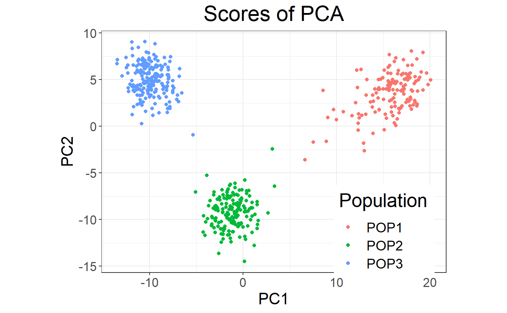
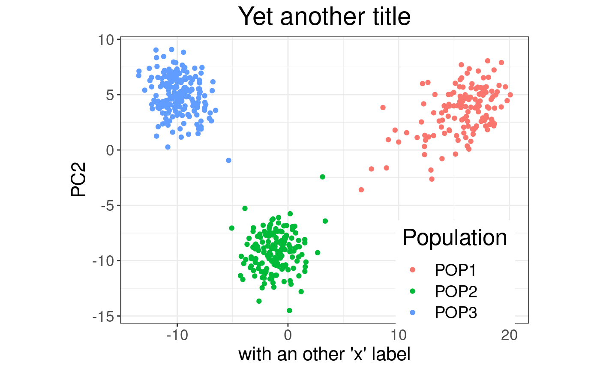
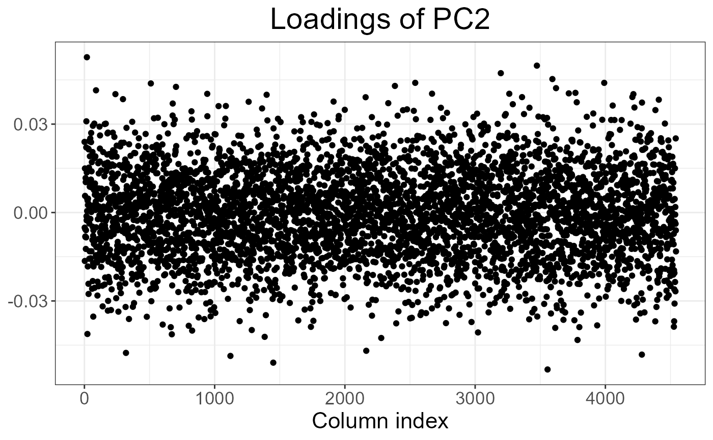

plot.big_SVD.RdPlot method for class big_SVD.
# S3 method for big_SVD plot(x, type = c("screeplot", "scores", "loadings"), nval = length(x$d), scores = c(1, 2), loadings = 1, cols = 2, coeff = 1, viridis = TRUE, ...)
| x | An object of class |
|---|---|
| type | Either
|
| nval | Number of singular values to plot. Default plots all computed. |
| scores | Vector of indices of the two PCs to plot. Default plots the first 2 PCs. |
| loadings | Indices of PC loadings to plot. Default plots the first vector of loadings. |
| cols | If multiple vector of loadings are to be plotted, this defines the number of columns of the resulting multiplot. |
| coeff | Relative size of text. Default is |
| viridis | Deprecated argument. |
| ... | Not used. |
A ggplot2 object. You can plot it using the print method.
You can modify it as you wish by adding layers. You might want to read
this chapter
to get more familiar with the package ggplot2.
big_SVD, big_randomSVD and asPlotlyText.
set.seed(1) X <- big_attachExtdata() svd <- big_SVD(X, big_scale(), k = 10) # screeplots plot(svd) # 3 PCs seems "significant"plot(svd, coeff = 1.5) # larger font for papers# scores plot plot(svd, type = "scores") # first 2 PCsplot(svd, type = "scores", scores = c(1, 3))## add color (recall that this return a `ggplot2` object) class(obj <- plot(svd, type = "scores"))#> [1] "gg" "ggplot"pop <- rep(c("POP1", "POP2", "POP3"), c(143, 167, 207)) library(ggplot2) print(obj2 <- obj + aes(color = pop) + labs(color = "Population"))## change the title and the labels of the axes obj3 + ggtitle("Yet another title") + xlab("with an other 'x' label")# loadings plot(svd, type = "loadings", loadings = 2)## all loadings plot(svd, type = "loadings", loadings = 1:10, coeff = 0.5)# dynamic plots, require the package **plotly**# NOT RUN { plotly::ggplotly(obj3) # }